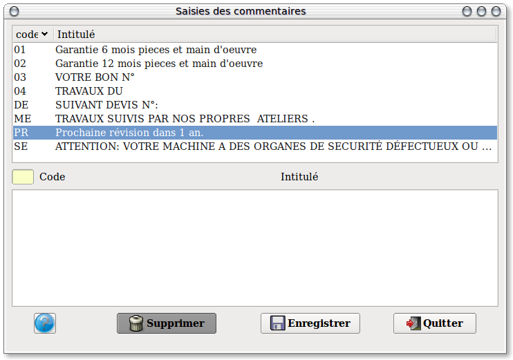

~ Comptabilité et Facturation Laurux ~

~ Comptabilité et Facturation Laurux ~ |
|
|
|

Ces libellés seront utilisés lors de la saisie de vos lignes de factures ou vous pourrez les rappeler d'un simple clic.
Positionnez-vous sur la zone " Code " et saisissez le sur 2 caractères maxi, saisissez ensuite l'intitulé. Le nombre de ligne n'est pas limité, mais la longueur ne devra pas dépasser 90 caractères.
N'oubliez pas d'enregistrer votre travail après chaque création ou modification.
----------------------------------------------------------------------------------------------------------------------